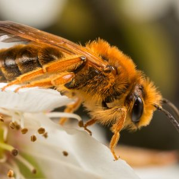
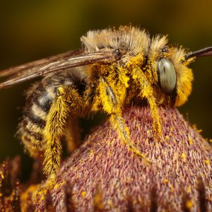
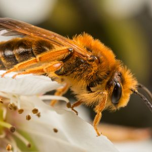
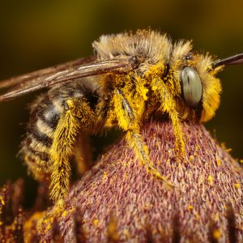

What’s Killing the Bees — and Why It Matters
Worldwide bee colony collapse is not as big a mystery as the chemical industry claims. The systemic nature of the problem makes it complex, but not impenetrable. Scientists know that bees are dying from a variety of factors—pesticides, drought, habitat destruction, nutrition deficit, air pollution, global warming and more. Many of these causes are interrelated. The bottom line is that we know humans are largely responsible for the two most prominent causes: pesticides and habitat loss. Worker bees (females) live about six weeks in summer and several months in the winter. Colonies produce new worker bees continuously during the spring and summer, and then reproduction slows during the winter. Typically, a bee hive or colony will decline by 5-10 percent over the winter, and replace those lost bees in the spring. In a bad year, a bee colony might lose 15-20 percent of its bees. In the U.S., winter losses have commonly reached 30-50 percent, in some cases more. In 2006, David Hackenberg — a bee keeper for 42 years — reported a 90 percent die-off among his 3,000 hives. U.S. National Agricultural Statistics show a honey bee decline from about 6 million hives in 1947 to 2.4 million hives in 2008, a 60 percent reduction. The number of working bee colonies per hectare provides a critical metric of crop health. In the U.S. — among crops that require bee pollination — the number of bee colonies per hectare has declined by 90 percent since 1962. The bees cannot keep pace with the winter die-off rates and habitat loss.
Pesticides and Bees
Biologists have found more than 150 different chemical residues in bee pollen, a deadly “pesticide cocktail” according to University of California apiculturist Eric Mussen. The chemical companies Bayer, Syngenta, BASF, Dow, DuPont and Monsanto shrug their shoulders at the systemic complexity, as if the mystery were too complicated. They advocate no change in pesticide policy. After all, selling poisons to the world’s farmers is profitable. Furthermore, wild bee habitat shrinks every year as industrial agribusiness converts grasslands and forest into mono-culture farms, which are then contaminated with pesticides. To reverse the world bee decline, we need to fix our dysfunctional and destructive agricultural system.
Solutions That Save the Bees
Common sense actions can restore and protect the world’s bees. Here’s a strong start:
- Ban the seven most dangerous pesticides.
- Protect pollinator health by preserving wild habitat./li>
- Restore ecological agriculture.
Ecological farming is the overarching new policy trend that will stabilize human food production, preserve wild habitats, and protect the bees. The nation of Bhutan has led the world in adopting a 100 percent organic farming policy. Mexico has banned genetically modified corn to protect its native corn varieties. Eight European countries have banned genetically modified crops and Hungary has burned more than 1,000 acres of corn contaminated with genetically modified varieties. In India, scientist Vandana Shiva and a network of small farmers have built an organic farming resistance to industrial agriculture over two decades. Ecological, organic farming is nothing new. It is the way most farming has been done throughout human history. Ecological farming resists insect damage by avoiding large monocrops and preserving ecosystem diversity. Ecological farming restores soil nutrients with natural composting systems, avoids soil loss from wind and water erosion, and avoids pesticides and chemical fertilizers. By restoring bee populations and healthier bees, ecological agriculture improves pollination, which in turn improves crop yields. Ecological farming takes advantage of the natural ecosystem services, water filtration, pollination, oxygen production, and disease and pest control. Organic farmers have advocated better research and funding by industry, government, farmers, and the public to develop organic farming techniques, improve food production, and maintain ecological health. The revolution in farming would promote equitable diets around the world and support crops primarily for human consumption, avoiding crops for animal food and biofuels.
What the U.S. Can Learn From Europe About Saving the Bees
In Europe, Asia and South America, the annual bee die-off lags behind the U.S. decline, but the trend is clear and the response has been more appropriate. In Europe, Rabobank reported that annual European die-offs have reached 30-35 percent and that the colonies-per-hectare count is down 25 percent. A European Food Safety Authority (EFSA) scientific report determined that three widely used pesticides — nicotine-based clothianidin, imidacloprid and thiametoxam — pose “high acute risks” for bees. The nicotinoid pesticides—used in soils, on foliage, and embedded in seeds—persist at the core of the toxic pesticide cocktail found in bee hives. A Greenpeace scientific report identifies seven priority bee-killer pesticides—including the three nicotine culprits—plus clorpyriphos, cypermethrin, deltamethrin, and fipronil. The three neonicotinoids act on insect nervous systems. They accumulate in individual bees and within entire colonies, including the honey that bees feed to infant larvae. Bees that do not die outright, experience sub-lethal systemic effects, development defects, weakness, and loss of orientation. The die-off leaves fewer bees and weaker bees, who must work harder to produce honey in depleted wild habitats. These conditions create the nightmare formula for bee colony collapse. Bayer makes and markets imidacloprid and clothianidin; Syngenta produces thiamethoxam. In 2009, the world market for these three toxins reached more than $2 billion. Syngenta, Bayer, Dow, Monsanto, and DuPont control nearly 100% of the world market for genetically modified pesticides, plants and seeds. In 2012, a German court criminally charged Syngenta with perjury for concealing its own report showing that its genetically modified corn had killed livestock. In the U.S., the company paid out $105 million to settle a class-action lawsuit for contaminating the drinking water for over 50 million citizens with its “gender-bending” herbicide Atrazine. Now, these corporate polluters are waging multi-million-euro campaigns to deny responsibility for bee colony collapse. In May, the European Commission responded, adopting a two-year ban on the three necotinoid pesticides, and later added the non-neonicotinoid fibronil. Scientists will use the two years to assess the recovery rate of the bees and a longer-term ban on these and other pesticides. Meanwhile, the U.S. dithers and supports the corporations that produce and market the deadly pesticides. The U.S. Environmental Protection Agency (EPA) continues to allow the use of neonicotinoid pesticides, in spite of a U.S. Department of Agriculture report warning about the dangers of the bee colony collapse. Also in 2014, President Obama signed the now infamous “Monsanto Protection Act” — written by Monsanto lobbyists — which gives biotech companies immunity in federal U.S. courts from damages to people and the environment caused by their commercial compounds.
 


